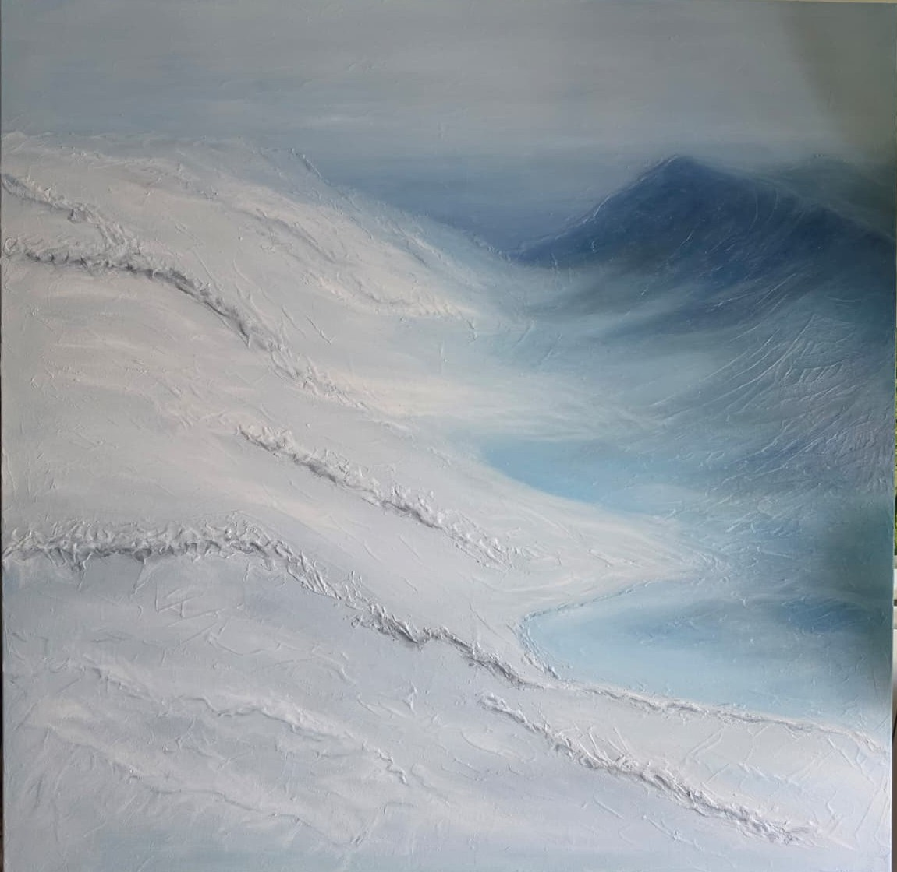
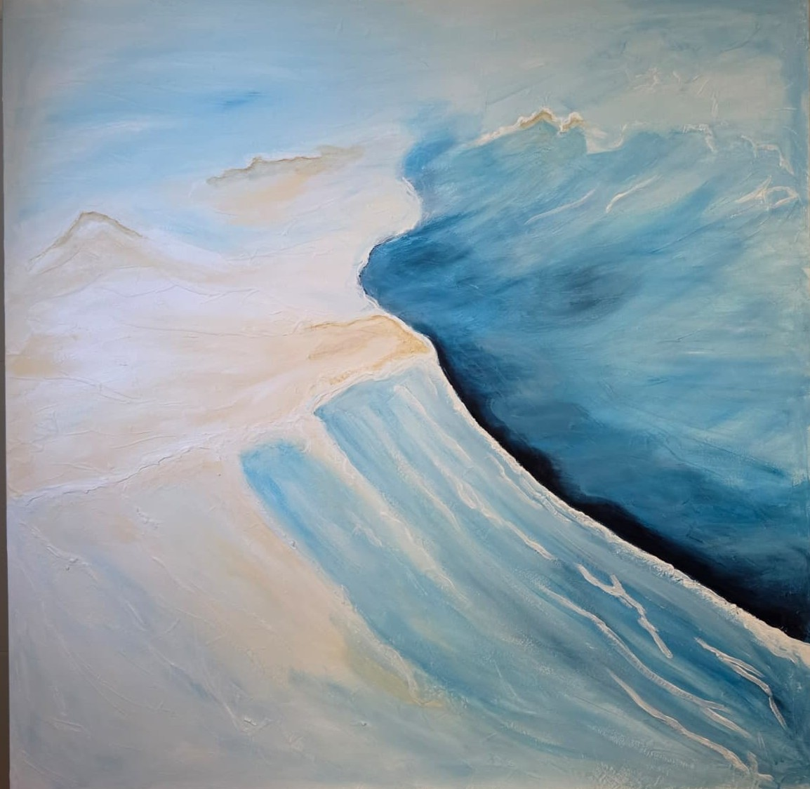
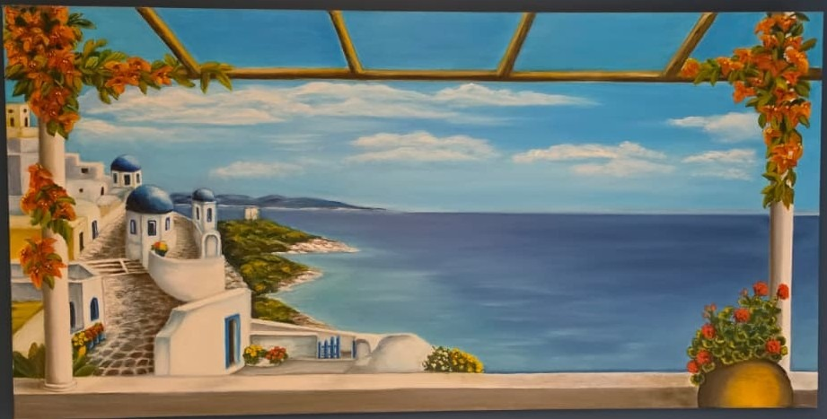
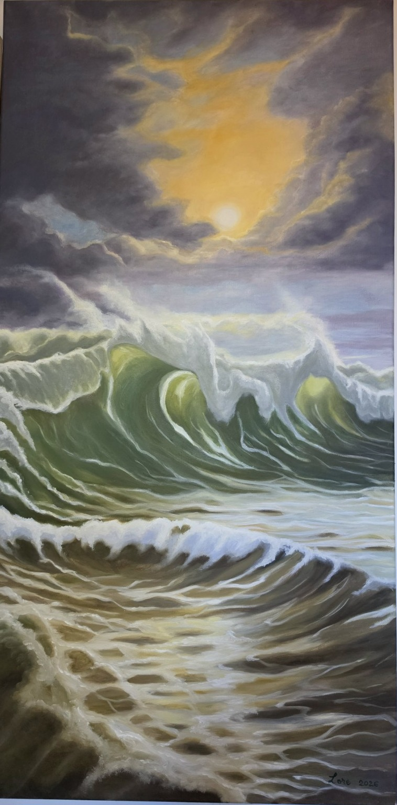
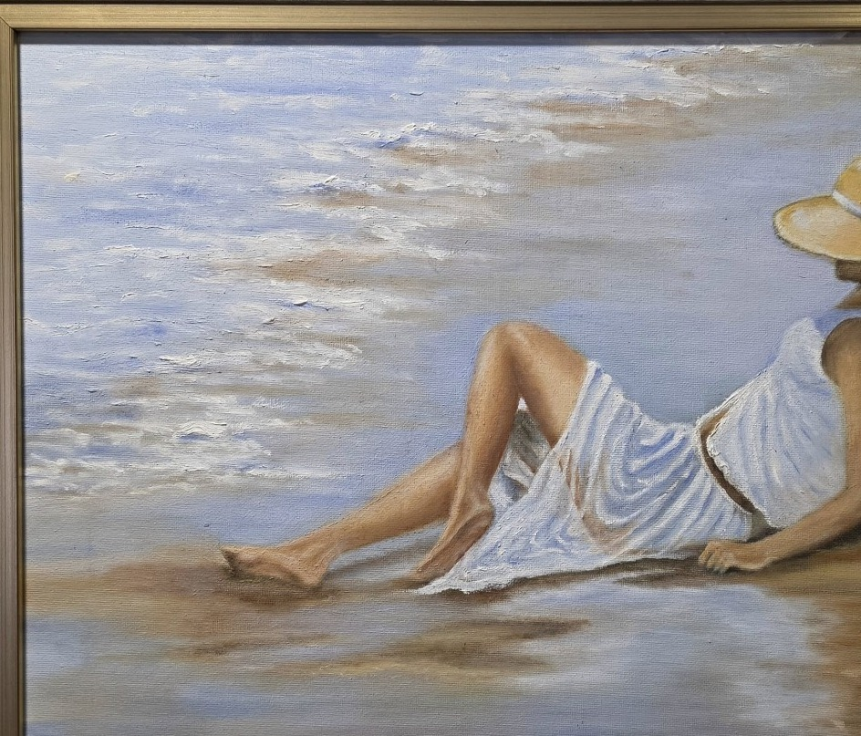
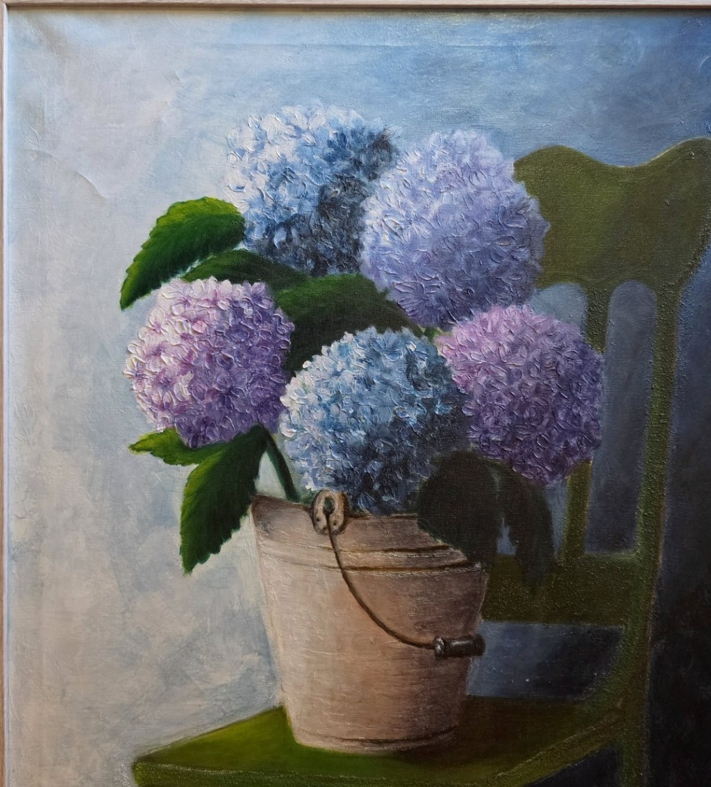

PORTAFOLIO DE ARTISTA
Pinturas de memoria,
luz y quietud.
Obras originales que exploran la materia, el paisaje y la emoción de los instantes que permanecen.


LA ARTISTA
Sobre LORE
LORE es el nombre artístico bajo el que se desarrolla una obra pictórica que transita entre la abstracción texturizada, los paisajes luminosos, la figuración íntima y nuevas naturalezas florales.
Su lenguaje visual parte de la atmósfera y del recuerdo: la luz del mar, el silencio de la naturaleza, la arquitectura de lugares imaginados y los pequeños gestos de la vida cotidiana. El color y la materia ocupan un lugar central, desde las superficies en relieve de blancos y azules hasta las composiciones cálidas de jardines, pueblos, flores y horizontes mediterráneos.
Más que representar un lugar de forma literal, cada pintura propone una emoción: una pausa, una memoria o una sensación de cercanía. Las obras conviven en distintos registros y comparten una búsqueda de equilibrio, serenidad y expresividad.
LOREUN UNIVERSO PICTÓRICO
Colecciones
Cinco maneras de recorrer la materia, el paisaje, el color y la presencia humana.

Miradas mediterráneas
03 — 15
Paisajes de la memoria
04 — 22
Instantes figurativos
08 — 16
Florales y bodegones
17 — 19EL PORTAFOLIO
Obras seleccionadas
Una selección ampliada de pinturas originales firmadas bajo el nombre de LORE.
DOCUMENTACIÓN DE LAS OBRAS
Autoría y autenticidad
Las obras de este portafolio se presentan bajo el nombre artístico LORE. Las fotografías muestran piezas físicas de la colección de la artista.
Para cualquier adquisición se puede solicitar la ficha individual de la obra, con imagen, firma, técnica, medidas, fecha de creación cuando conste y un certificado de autenticidad emitido por la artista.
La información técnica y documental se facilita previa comprobación. La publicación en esta web no sustituye por sí sola un certificado de autenticidad.